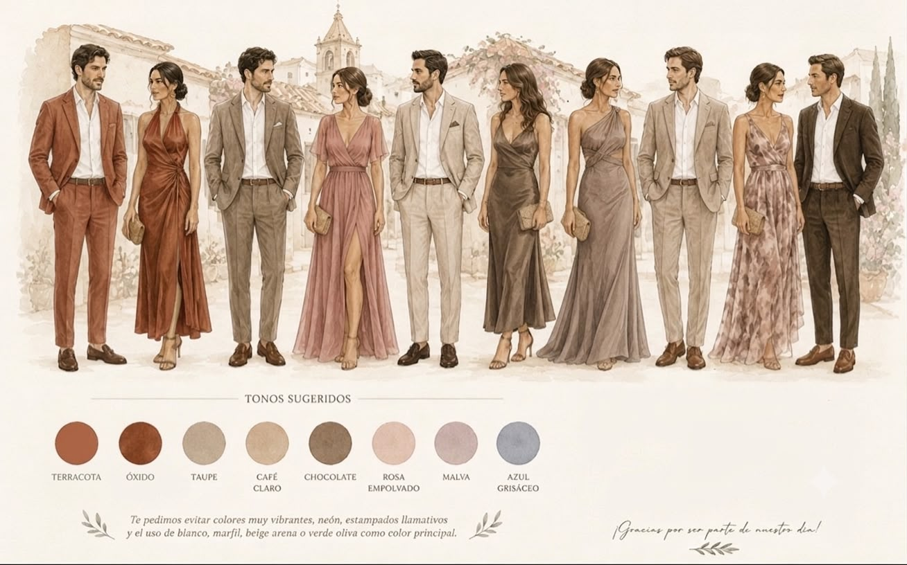
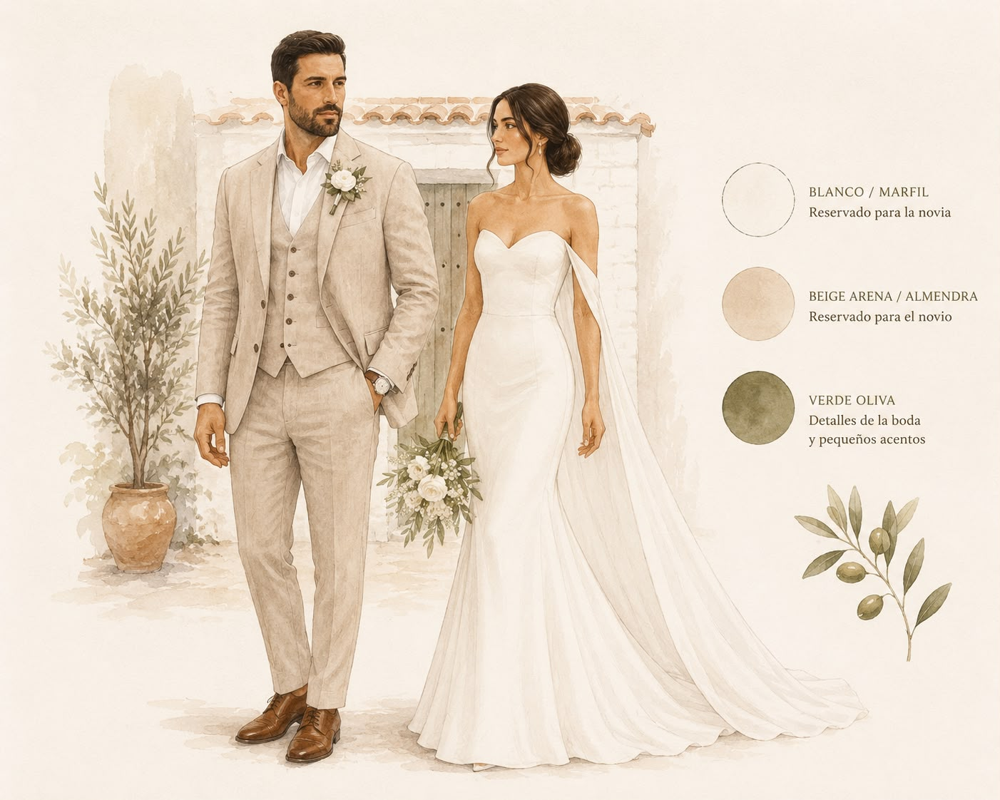

Código de Vestimenta
Formal - Cálido Barichara
Guía de Estilo & Tonos Sugeridos

Colores Reservados

A tener en cuenta: Te pedimos evitar el uso de colores muy vibrantes, neón, estampados demasiado llamativos o el uso de blanco, marfil, beige arena o verde oliva como color principal de tu atuendo.